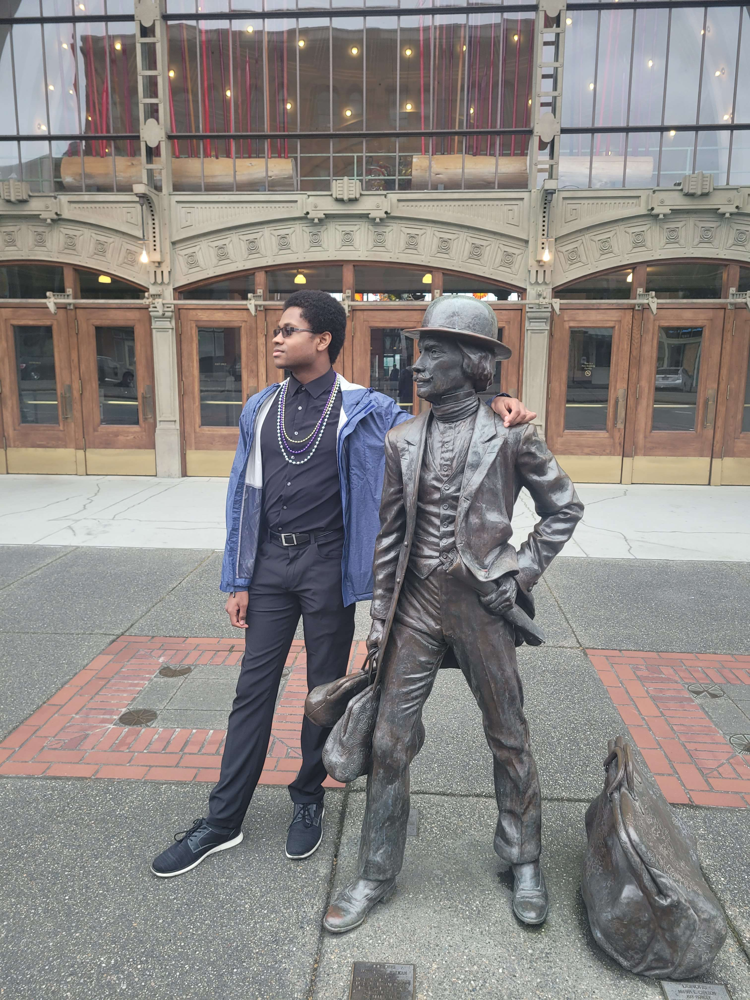

My name is Dajan Lyttle and I am an electrical engineer based in Seattle, WA.
I currently work as an Assistant Consultant Electrical Engineer at WSP USA.
My primary interests are renewable energy production, smart grids, and energy equity.
I started my college career at Bellevue College (BC) in 2018.
I transferred to the University of Washington Tacoma (UWT) in 2020,
where I earned my Bachelor of Science in Electric Engineering in 2023.
For my Senior Project at UWT, I developed a self-healing algorithm for a solar-powered microgrid.
During my tenure at UWT, I worked on-campus as a Quanititative Tutor for two years.
As a tutor, I helped UWT students with math, physics, computer science, and statistics.
Working with UWT's diverse student body helped me to communicate with people from different backgrounds and knowledge levels.
Being a tutor also fed my interest in making quality education available and accessible to everyone.
I hope to be more involved in STEM education at all levels during my career.
UWT is where I first became involved the Institute of Electrical and Electronics Engineers (IEEE).
During my junior year, I was inducted into
Eta Kappa Nu (IEEE-HKN),
IEEE's honor society.
During my senior year, I was a General Officer in my school's IEEE Student Branch.
That year, our club designed a battle robot for the
annual RoboBrawl competition,
in which I served as leader of the communications team.
Upon graduation, I joined the
IEEE Power and Energy Society (IEEE-PES).
I started working at WSP USA as an Electrical Engineering Intern during my senior year of university.
As an intern, I worked on electrification studies for airports seeking to accomodate electric aircraft.
After graduation, I joined WSP USA full-time as an Assistant Consultant, Electrical Engineer in the Power & Energy Group.
In my free time, I love to cook, read, and exercise.
I'm an avid sports fan; my favorite teams are FC Barcelona and the Atlanta Hawks.
I've also been learning Spanish for a few years, and I just started learning Japanese.

If you work like to connect with me regarding work, research, education, or anything in general,
please feel free to contact me via
email or
LinkedIn.